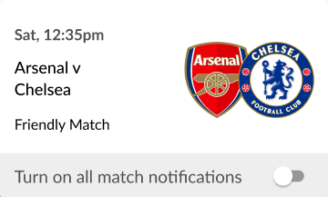

Sat, 12:35pm
Arsenal vs
Chelsea
Chelsea
Friendly Match
Turn on all match notifications


WHAT IT DOES
An Enhanced Football Experience
The Guardian Live Scores app is your go to app for live scores and watching Premier League goals… Get in there, what a result! As well as videos of all the goals, you can watch match highlights, check out the latest scores and results andstay bang-up-to-date with the big football stories from The Guardian publication.
Learn more